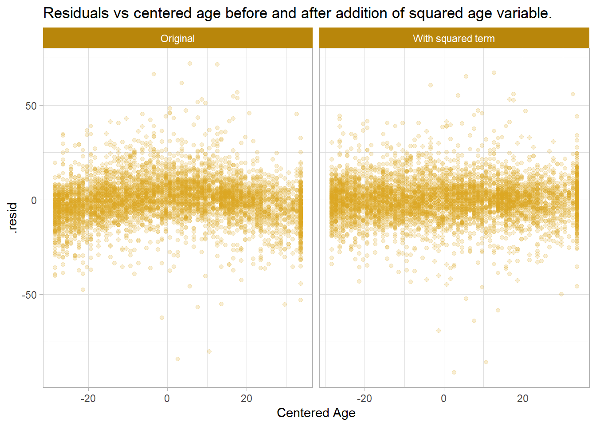
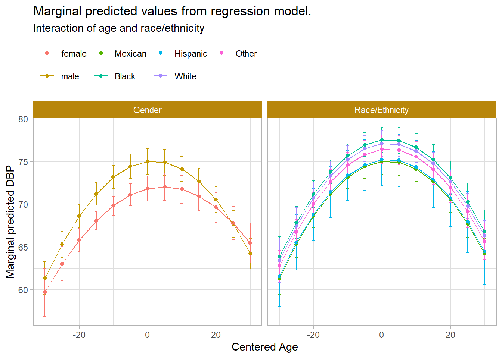
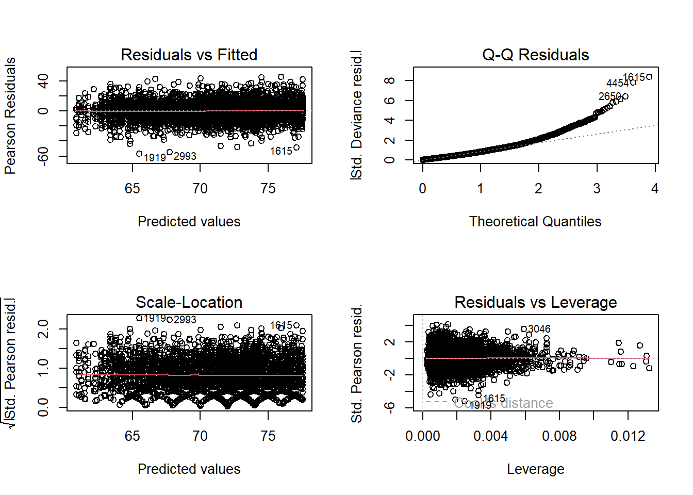
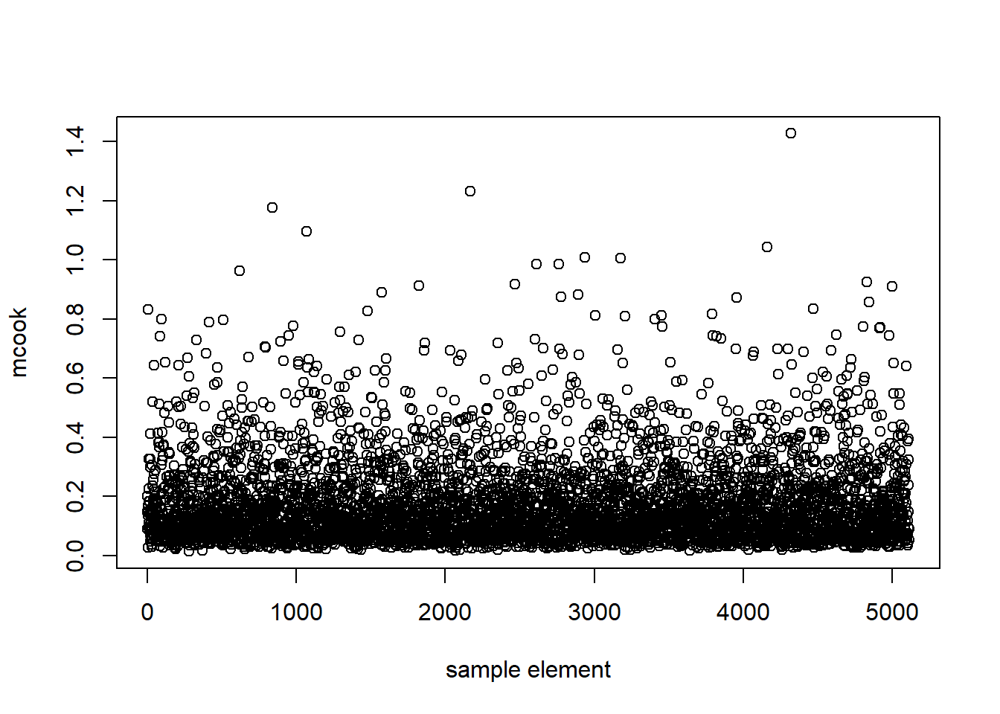

library(tidyverse)
library(scales)
library(janitor)
library(glue)
library(survey)
library(srvyr)
library(gtsummary)
library(broom)
library(ggeffects)
library(svydiags)
library(NHANES)10 Case Study: NHANES
This case study follows the tutorial laid out in section 7.5 of Heeringa (2017). It uses the National Health and Nutrition Examination Survey (NHANES) to build a predictive model of diastolic blood pressure (DBP). The NHANES sample is a stratified cluster sample, weighted for unequal probabilities of selection, non-response, and post-stratification.
10.1 Data Preparation
data(NHANESraw)Heeringa identifies a data cleaning step, converting 0s to NA.
nhanes <-
NHANESraw |>
filter(SurveyYr == "2011_12") |>
mutate(
BPDia1 = if_else(BPDia1 == 0, NA_integer_, BPDia1),
Race1 = fct_relevel(Race1, "Mexican", after = 0),
Gender = fct_relevel(Gender, "male", after = 0)
)Create a survey design object for analysis. Use it to create a new variable, centered age, Age.
nhanes_des <- as_survey_design(
nhanes,
ids = SDMVPSU, # primary sampling unit (cluster)
strata = SDMVSTRA, # sampling stratum
nest = TRUE, # strata ids are repeated across clusters
weights = WTMEC2YR
)
weighted_mean_age <-
nhanes_des |>
filter(Age >= 18) |>
summarize(M = survey_mean(Age)) |>
pull(M)
nhanes_des <-
nhanes_des |>
mutate(
Age18p = Age >= 18,
Age = Age - weighted_mean_age
)
summary(nhanes_des)Stratified 1 - level Cluster Sampling design (with replacement)
With (31) clusters.
Called via srvyr
Probabilities:
Min. 1st Qu. Median Mean 3rd Qu. Max.
4.493e-06 2.874e-05 5.528e-05 Inf 8.949e-05 Inf
Stratum Sizes:
90 91 92 93 94 95 96 97 98 99 100 101 102 103
obs 862 998 875 602 688 722 676 608 708 682 700 715 624 296
design.PSU 3 3 3 2 2 2 2 2 2 2 2 2 2 2
actual.PSU 3 3 3 2 2 2 2 2 2 2 2 2 2 2
Data variables:
[1] "ID" "SurveyYr" "Gender" "Age"
[5] "AgeMonths" "Race1" "Race3" "Education"
[9] "MaritalStatus" "HHIncome" "HHIncomeMid" "Poverty"
[13] "HomeRooms" "HomeOwn" "Work" "Weight"
[17] "Length" "HeadCirc" "Height" "BMI"
[21] "BMICatUnder20yrs" "BMI_WHO" "Pulse" "BPSysAve"
[25] "BPDiaAve" "BPSys1" "BPDia1" "BPSys2"
[29] "BPDia2" "BPSys3" "BPDia3" "Testosterone"
[33] "DirectChol" "TotChol" "UrineVol1" "UrineFlow1"
[37] "UrineVol2" "UrineFlow2" "Diabetes" "DiabetesAge"
[41] "HealthGen" "DaysPhysHlthBad" "DaysMentHlthBad" "LittleInterest"
[45] "Depressed" "nPregnancies" "nBabies" "Age1stBaby"
[49] "SleepHrsNight" "SleepTrouble" "PhysActive" "PhysActiveDays"
[53] "TVHrsDay" "CompHrsDay" "TVHrsDayChild" "CompHrsDayChild"
[57] "Alcohol12PlusYr" "AlcoholDay" "AlcoholYear" "SmokeNow"
[61] "Smoke100" "SmokeAge" "Marijuana" "AgeFirstMarij"
[65] "RegularMarij" "AgeRegMarij" "HardDrugs" "SexEver"
[69] "SexAge" "SexNumPartnLife" "SexNumPartYear" "SameSex"
[73] "SexOrientation" "WTINT2YR" "WTMEC2YR" "SDMVPSU"
[77] "SDMVSTRA" "PregnantNow" "Age18p" 10.2 Descriptive Analysis
Regress the continuous response variable, diastolic blood pressure (BPDia1), on four predictors of interest: race/ethnicity (Race1), centered-age (Age), gender (Gender), and sexual orientation (SexOrientation).
Show the code
nhanes_des |>
tbl_uvregression(
y = BPDia1,
method = survey::svyglm,
method.args = list(subset = (Age18p == 1)),
include = c(Race1, Age, Gender, SexOrientation),
estimate_fun = label_style_number(digits = 2),
pvalue_fun = label_style_pvalue(digits = 2),
label = list(
Race1 ~ "Race/ethnicity",
Age ~ "Age (cent.)",
Gender ~ "Gender"
# MaritalStatus ~ "Marital status"
)
) |>
# add_global_p(anova_fun = tidy_wald_test) |>
as_gt() |>
gt::tab_caption(".") |>
gt::tab_header(
title = "Initial Design-Based Bivariate Regression Analysis Results ",
subtitle = glue("Assessing Potential Predictors of Diastolic Blood Pressure ",
"for the 2011–2012 NHANES Adult Sample")
) |>
gt::tab_options(heading.align = "left") | Initial Design-Based Bivariate Regression Analysis Results | ||||
|---|---|---|---|---|
| Assessing Potential Predictors of Diastolic Blood Pressure for the 2011–2012 NHANES Adult Sample | ||||
Characteristic |
N |
Beta |
95% CI 1 |
p-value |
| Race/ethnicity | 212,747,914 | |||
| Mexican | — | — | ||
| Black | 2.29 | 0.77, 3.81 | 0.006 | |
| Hispanic | -0.15 | -3.30, 2.99 | 0.92 | |
| White | 2.18 | 0.58, 3.79 | 0.011 | |
| Other | 1.31 | -0.22, 2.83 | 0.087 | |
| Age (cent.) | 212,747,914 | 0.04 | 0.00, 0.08 | 0.053 |
| Gender | 212,747,914 | |||
| male | — | — | ||
| female | -2.20 | -3.40, -1.00 | 0.001 | |
| SexOrientation | 140,128,079 | |||
| Bisexual | — | — | ||
| Heterosexual | 2.42 | -1.74, 6.59 | 0.23 | |
| Homosexual | 1.61 | -2.04, 5.26 | 0.36 | |
| 1
CI = Confidence Interval |
||||
The design-based t-tests suggest that race/ethnicity, age, and gender have potentially significant relationships with DBP, while sexual orientation does not appear to be related. Non-Hispanic whites, non-Hispanic blacks, older adults, and males appear to have the highest DBPs at first glance. Include the first three predictors in an initial model.
10.3 Analysis
10.3.1 Model Fitting
Fit an initial regression model with the variables of interest. Notice how the dataset is filtered inside the model with subset.
fit_1 <- svyglm(
BPDia1 ~ Race1 + Age + Gender,
design = nhanes_des,
subset = (Age18p == 1)
)Show the code
fit_1 |>
gtsummary::tbl_regression(
label = list(
Race1 ~ "Race/ethnicity",
Age ~ "Age (cent.)",
Gender ~ "Gender"
),
intercept = TRUE,
estimate_fun = label_style_number(digits = 3)
) |>
gtsummary::add_glance_source_note() |>
gtsummary::add_n(location = "level") |>
gtsummary::bold_p() |>
as_gt() |>
gt::tab_caption(".") |>
gt::tab_header(
title = "Initial Model for Diastolic Blood Pressure",
subtitle = glue("Design-Adjusted Test Statistics and Confidence Intervals ",
"for the Parameters, and Design Effects for the Parameter ",
"Estimates.")
) |>
gt::tab_options(heading.align = "left")| Initial Model for Diastolic Blood Pressure | ||||
| Design-Adjusted Test Statistics and Confidence Intervals for the Parameters, and Design Effects for the Parameter Estimates. | ||||
Characteristic |
N |
Beta |
95% CI |
p-value |
|---|---|---|---|---|
| (Intercept) | 212,747,914 | 71.149 | 70.008, 72.289 | <0.001 |
| Race/ethnicity | ||||
| Mexican | 16,644,312 | — | — | |
| Black | 24,960,921 | 2.302 | 0.839, 3.765 | 0.005 |
| Hispanic | 13,924,721 | -0.141 | -3.167, 2.884 | >0.9 |
| White | 140,677,592 | 1.904 | 0.123, 3.685 | 0.038 |
| Other | 16,540,366 | 1.262 | -0.294, 2.817 | 0.10 |
| Age (cent.) | 212,747,914 | 0.037 | -0.009, 0.083 | 0.10 |
| Gender | ||||
| male | 104,775,375 | — | — | |
| female | 107,972,538 | -2.291 | -3.498, -1.084 | 0.002 |
Null deviance = 703,891; Null df = 5,111; AIC = 41,417; BIC = 691,687; Deviance = 691,627; Residual df = 11; No. Obs. = 5,112 |
||||
| 1 CI = Confidence Interval |
||||
The t statistics degrees of freedom equal the number of ultimate clusters (31) minus the number of strata (14).
Plot residuals against the predictor variables. The augment() function has not been specifically written for svyglm objects, so you need to make a couple adjustments. Start with the centered age, Age. The plot has a curvilinear pattern suggesting a quadratic relationship. Add a squared term and re-plot the residuals.
preds_1 <-
augment(fit_1) |>
mutate(
.se.fit = sqrt(attr(.fitted, "var")),
.fitted = as.numeric(.fitted)
)
fit_2 <- svyglm(
BPDia1 ~ Race1 + Age + I(Age^2) + Gender,
design = nhanes_des,
subset = (Age18p == 1)
)
preds_2 <-
augment(fit_2) |>
mutate(
.se.fit = sqrt(attr(.fitted, "var")),
.fitted = as.numeric(.fitted)
)Show the code
bind_rows(
Original = preds_1,
`With squared term` = preds_2,
.id = "mdl"
) |>
ggplot(aes(y = .resid, x = Age)) +
geom_point(color = "goldenrod", alpha = .2) +
facet_wrap(vars(mdl)) +
labs(
x = "Centered Age",
title = glue("Residuals vs centered age before and after addition of ",
"squared age variable.")
)
It does appear better. The AIC and BIC also decreased, meaning the second model is more efficient.
Show the code
bind_rows(
fit_1 = glance(fit_1),
fit_2 = glance(fit_2),
.id = "Model Fit"
) |>
gt::gt()| Model Fit | null.deviance | df.null | AIC | BIC | deviance | df.residual | nobs |
|---|---|---|---|---|---|---|---|
| fit_1 | 703891.3 | 5111 | 41416.82 | 691686.9 | 691627.1 | 11 | 5112 |
| fit_2 | 703891.3 | 5111 | 40859.00 | 623672.1 | 623603.8 | 10 | 5112 |
Add interactions between Age and each of the demographic factor variables, one at a time, to test whether they moderate the relationship between age and DBP. Start with race/ethnicity, and perform a Wald test of the null hypothesis that all eight parameters are simultaneously equal to zero.
fit_3 <- svyglm(
BPDia1 ~ Race1*Age + Race1*I(Age^2) + Gender,
design = nhanes_des,
subset = (Age18p == 1)
)
regTermTest(fit_3, ~ Race1:Age + Race1:I(Age^2))Wald test for Race1:Age Race1:I(Age^2)
in svyglm(formula = BPDia1 ~ Race1 * Age + Race1 * I(Age^2) + Gender,
design = nhanes_des, subset = (Age18p == 1))
F = 11.8955 on 8 and 2 df: p= 0.079828 None of the interaction estimators have a p-value < .05, and the Wald test fails to reject the null hypothesis. How about interacting with gender? This time the interactions are significant and the Wald test rejects the null hypothesis.
fit_4 <- svyglm(
BPDia1 ~ Race1 + Gender*Age + Gender*I(Age^2),
design = nhanes_des,
subset = (Age18p == 1)
)
summary(fit_4, df.resid = degf(nhanes_des))
Call:
svyglm(formula = BPDia1 ~ Race1 + Gender * Age + Gender * I(Age^2),
design = nhanes_des, subset = (Age18p == 1))
Survey design:
Called via srvyr
Coefficients:
Estimate Std. Error t value Pr(>|t|)
(Intercept) 74.9844260 0.6456943 116.130 < 2e-16 ***
Race1Black 2.5401774 0.7328015 3.466 0.002951 **
Race1Hispanic 0.2056088 1.2087808 0.170 0.866942
Race1White 2.0990068 0.8453388 2.483 0.023758 *
Race1Other 1.4274416 0.6919988 2.063 0.054754 .
Genderfemale -3.1709391 0.7571871 -4.188 0.000618 ***
Age 0.0482851 0.0163167 2.959 0.008785 **
I(Age^2) -0.0135697 0.0008394 -16.165 9.39e-12 ***
Genderfemale:Age 0.0475724 0.0229597 2.072 0.053791 .
Genderfemale:I(Age^2) 0.0033007 0.0016223 2.035 0.057796 .
---
Signif. codes: 0 '***' 0.001 '**' 0.01 '*' 0.05 '.' 0.1 ' ' 1
(Dispersion parameter for gaussian family taken to be 121.4838)
Number of Fisher Scoring iterations: 2regTermTest(fit_4, ~ Gender:Age + Gender:I(Age^2))Wald test for Gender:Age Gender:I(Age^2)
in svyglm(formula = BPDia1 ~ Race1 + Gender * Age + Gender * I(Age^2),
design = nhanes_des, subset = (Age18p == 1))
F = 5.356873 on 2 and 8 df: p= 0.033398 Plot marginal predicted values from DBP to assess variability in the relationship between age and DBP depending on race/ethnicity and gender. African Americans have a higher acceleration in DBP until middle age, then the gap decreases.
Show the code
bind_rows(
`Race/Ethnicity` = fit_4 |>
predict_response(terms = c("Age [-30:30 by=5]", "Race1")) |>
as_tibble(),
Gender = fit_4 |>
predict_response(terms = c("Age [-30:30 by=5]", "Gender")) |>
as_tibble(),
.id = "Covar"
) |>
mutate(group = fct_relevel(group, c("female", "male"), after = 0)) |>
ggplot(aes(x = x, y = predicted, color = group)) +
geom_errorbar(aes(ymin = conf.low, ymax = conf.high), width = 0.8) +
geom_point() +
geom_line() +
labs(
x = "Centered Age", y = "Marginal predicted DBP", color = NULL,
title = "Marginal predicted values from regression model.",
subtitle = "Interaction of age and race/ethnicity"
) +
facet_wrap(vars(Covar)) +
theme(legend.position = "top", legend.justification = "left")
10.3.2 Model Diagnostics
The residuals vs fitted plot varies equally around 0 in a straight horizontal line (linearity and homoscedasticity). The Q-Q residuals plot is bowed at the high end, so prediction intervals maybe be inaccurate. The equal spread along the horizontal of the scale-location plot supports homoscedasticity. The residuals vs leverage plot identifies a few influential observations.
par(mfrow = c(2, 2))
plot(fit_4, labels.id = NULL)
Check for influential points and outliers.
library(MASS)
cooks_d4 <- svyCooksD(fit_4, doplot = TRUE)